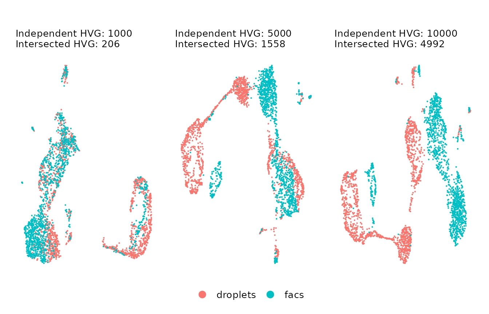
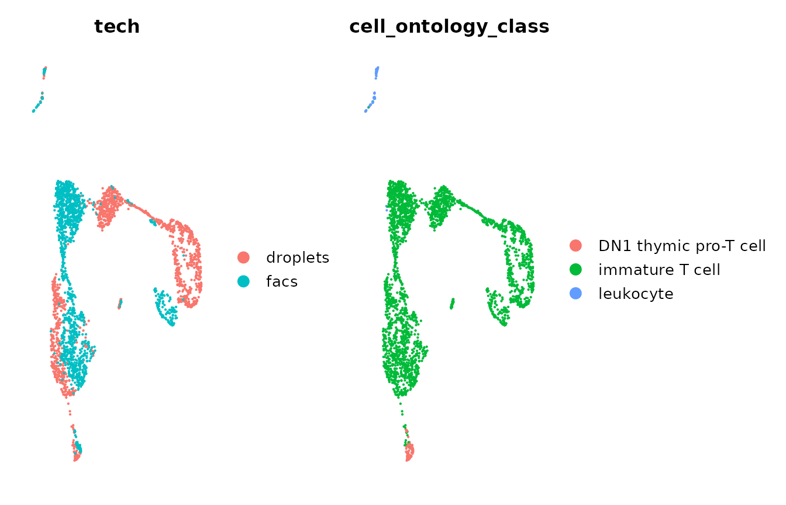
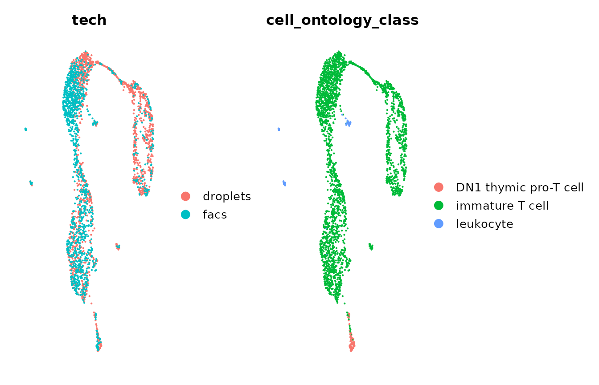

Best practices on batch effects correction
Source:vignettes/articles/Best_practices_thymus.Rmd
Best_practices_thymus.RmdMotivation to develop this vignette.
Correcting batch effects is an important step in every multi-batch scRNA-seq data analysis of biological replicates, where we would like to preserve the within-differences of batches while reducing technical differences. We acknowledge that batch effects correction is just a single step in a complete analysis, and we wouldn’t like to spend so much time on it. However, we think that it is important to pay special attention to correct batch effects because an incorrect analysis could completely change the conclusions of downstream analyses and we might end up wasting a significant amount of research-time.
After experiencing diverse problems and difficulties correcting batch effects, we decided to make this vignette to help you to perform this task as smoothly as possible. Our tips to share with you are the next:
- Tip 1. Double-check the labels you use to correct batch effects.
- Tip 2. Always confirm the assay used on each step
- Tip 3. Pay special attention to the variable features used to correct batch effects.
- Tip 4. Confirm that you are using the correct variable features
- Tip 5. Confirm the number of PCs after correcting batch effects
In this vignette, we will explain further these tips with a guided batch correction example using two thymus data sets from Tabula Muris:
Init
library(Canek)
library(Seurat)
library(ggplot2)
library(patchwork)
library(here)
####################
##GLOBAL VARIABLES##
####################
myTheme <-theme(plot.title = element_text(size = 12),
plot.subtitle = element_text(size = 10),
legend.text = element_text(size = 10))
#########################################
##EXTRA FUNCTIONS USED IN THIS VIGNETTE##
#########################################
##Name: MyElbowPlot
##Input: Seurat object, number of principal components to use.
##Output: Elbow plot showing the variance capture by the principal components.
MyElbowPlot <- function(seurat_object = NULL, n_components = 30){
#get PCA embeddings
pca_data <- Seurat::Embeddings(object = seurat_object, "pca")
#calculate the variance
variance <- apply(X = pca_data, MARGIN = 2, FUN = var)
#create data frame to plot
df <- data.frame(Components = factor(x = colnames(pca_data)[1:n_components], levels = colnames(pca_data)[1:n_components]), Variance = variance[1:n_components])
#plot
ggplot(data = df, aes(x = Components, y = Variance)) + geom_point() +
theme(axis.text.x = element_text(angle = 60, vjust = 1.0, hjust=1))
}
##Name: GetIntersectHVF
##Input: Seurat object list, number of independent features to use.
##Output: Features' instersection
GetIntersectHVF <- function(object_ls = NULL, n_features = 2000){
object_ls <- lapply(X = object_ls, FUN = FindVariableFeatures, nfeatures = n_features, verbose = FALSE)
independent_features <- lapply(X = object_ls, FUN = VariableFeatures)
intersection_features <- Reduce(f = intersect, x = independent_features)
return(intersection_features)
}
##Name: FindIntegrationHVF
##Input: Seurat object list, number of independent features to search within a given range
##Output: Integration features
FindIntegrationHVF <- function(object_ls = NULL, n_features = 2000,
range = 500, init_nVF = 2000,
gain = 0.8, max_it = 100, verbose = TRUE){
# Init
found_HFV <- 0
n_independent_features = init_nVF
it = 1
#While the difference between the number of found VF and the objective number of VF are more or less than the fixed range
while(abs(n_features - length(found_HFV)) > range){
# If we get to the maximum iterations, we stop and send an error.
if(it > max_it){
stop(call. = TRUE, "Error. The desired number of VF cannot be fulfilled within the maximum number of iterations. Try to reduce the number of n_features or to increase the gain of the search algorithm.")
}
#Get the HVF as the intersection of independent HVF among batches
found_HFV <- GetIntersectHVF(object_ls = object_ls, n_features = n_independent_features)
#Update the new number of independent variable features
n_independent_features <- round(n_independent_features + gain*(n_features + range - length(found_HFV)),
digits = -2)
#Update the iteration
it <- it + 1
}
#If verbose, print general information of the HVF
if(verbose){
cat("Number of independent VF: ", n_independent_features, "\nNumber of VF after intersection: ", length(found_HFV))
}
return(found_HFV)
}Load seurat objects
Let’s load the two data sets using their URLs. Alternatively, you can first download the data sets and load them from your Downloads folder.
thymus_ls <- list()
# Load the droplets data set
#load(here("~/Downloads/droplet_Thymus_seurat_tiss.Robj"))
load(url("https://figshare.com/ndownloader/files/13090580"))
thymus_ls[["droplets"]] <- tiss
# Load the facs data set
#load(here("~/Downloads/facs_Thymus_seurat_tiss.Robj"))
load(url("https://figshare.com/ndownloader/files/13092398"))
thymus_ls[["facs"]] <- tiss
rm(tiss)The data sets downloaded from Tabula Muris are Seurat objects, but
they are in an old format. Then, we need to update them using the
UpdateSeuratObject function.
thymus_ls <- lapply(X = thymus_ls, FUN = Seurat::UpdateSeuratObject)Tip 1. Double-check the label you will use to correct batch effects.
All batch effect correction methods require a batch
label to distinguish data sets. In this case, because the
data sets were prepared using different technologies (droplets and
facs), we would like to correct the technical differences related to
technology. If your data sets were prepared with the same
technology but sequenced in different samples, you might like to correct
the differences related to samples. It would be the same for
biological or technical replicates, you might like to
correct technical differences using the replicate label.
As we said before, in this example we would like to reduce the technical differences between the technologies used to prepare the cells. Because we don’t have a common label related to the technology, let’s create one for each data set.
thymus_ls$droplets[["tech"]] <- "droplets"
thymus_ls$facs[["tech"]] <- "facs"Tip 2. Always confirm the assay used on each step
In a typical batch effect correction workflow we would be switching
between assays on different steps, e.g. RNA,
integrated or Canek, etc. Then, we would
recommend you to explicitly write the assay used on each step, so you
are sure of using the correct one.
On this vignette, we follow the standard preprocessing
workflow from Seurat
R package (see Seurat-Guided Clustering Tutorial vignette)
to normalize the RNA assay of the batches.
thymus_ls <- lapply(X = thymus_ls, FUN = Seurat::NormalizeData, assay = "RNA", verbose = FALSE)Tip 3. Pay special attention to the variable features used to correct batch effects.
One important step for batch correction is the selection of
highly variable genes, also known as variable features
(VF), that properly capture the heterogeneity of batches without
over-fitting or adding noisy signals. The simplest way
to do this is to obtain independent VFs for each batch and then
find their intersection. In this way, the number of independent
VFs serves as a trade-off between reducing or preserving the
within-batch differences. Let’s check this trade-off using UMAP
representations of the uncorrected data with an increasing
number of VF (1k, 5k, and 10k independent VFs).
#set the number of VFs to use
n_VF <- c(1000, 5000, 10000)
#get the uncorrected data
uncorrected <- Reduce(f = merge, x = thymus_ls)
#normalize the uncorrected data
uncorrected <- NormalizeData(object = uncorrected, assay = "RNA")
#list to store the plots using different number of VFs
plots_ls <- list()
#for each number of VFs
for(n in n_VF){
# Get the intersection of VF using the GetIntersectHVF. This functions returns a vector containing the names of the VFs.
intersected_VFs <- GetIntersectHVF(object_ls = thymus_ls, n_features = n)
#set the variable features
VariableFeatures(uncorrected) <- intersected_VFs
# Scale the uncorrected data for PCA. Make sure to use the VFs found before.
uncorrected <- ScaleData(object = uncorrected, features = intersected_VFs, assay = "RNA", verbose = FALSE)
# Get PCA and UMAP dimensionality reductions. Make sure to use the VFs found before.
#For now let's use the first 15 PCs. This is just a common number of PCs used in scRNA-seq analyses, but feel free to use a different number.
uncorrected <- RunPCA(object = uncorrected, assay = "RNA", features = intersected_VFs, npcs = 15, verbose = FALSE)
uncorrected <- RunUMAP(object = uncorrected, dims = 1:15, reduction = "pca", verbose = FALSE)
# Save the scatterplot
plots_ls[[as.character(n)]] <- DimPlot(object = uncorrected, group.by = "tech", pt.size = 0.1 ) +
ggtitle(label = "", subtitle = paste0("Independent HVG: ", n, "\nIntersected HVG: ",
length(intersected_VFs)))
}
#> Warning: The default method for RunUMAP has changed from calling Python UMAP via reticulate to the R-native UWOT using the cosine metric
#> To use Python UMAP via reticulate, set umap.method to 'umap-learn' and metric to 'correlation'
#> This message will be shown once per session
rm(intersected_VFs, n_VF, n)Let’s check the UMAP plots using different sets of VFs.
plots_ls[[1]] + plots_ls[[2]] + plots_ls[[3]] + plot_layout(guides = "collect") & NoAxes() + myTheme + theme(legend.position = "bottom", )
As you can observe,
- If we used a small number of VFs (left plot; VFs before intersection: 1k, VFs after intersection: 206), we get subtle differences between the data sets, but the structures of cells are not well defined.
- If we use a large number of VFs (right plot; VFs before intersection: 10k, VFs after intersection: 4992), we capture a more complex structure of the cells, but the differences between batches increased significantly.
Therefore, we would prefer to use a midpoint set of VFs that captures the heterogeneity of cells without over-increasing the batch differences, e.g. the UMAP in the center.
To ease the selection of integration VFs, we provide the
function FindIntegrationHVF to find and average the number
of intersected VFs within a given range. Let’s use this function to find
1500 (+/- 100) intersected VFs.
integration_features <- FindIntegrationHVF(object_ls = thymus_ls, n_features = 1500, range = 100)
#> Number of independent VF: 4800
#> Number of VF after intersection: 1414Let’s visualize the uncorrected data using the variable features we just found.
VariableFeatures(uncorrected) <- integration_features
uncorrected <- ScaleData(object = uncorrected, assay = "RNA", features = integration_features,verbose = FALSE)
uncorrected <- RunPCA(object = uncorrected, assay = "RNA", features = integration_features, npcs = 50, verbose = FALSE)Let’s check out the elbow plot of the PCs.
MyElbowPlot(seurat_object = uncorrected, n_components = 30)The variance stabilizes after 7 PCs. In this test, we will use 10 PCs to calculate the UMAP visualization, but feel free to try other numbers.
set.seed(777)
uncorrected <- RunUMAP(object = uncorrected, dims = 1:10, reduction = "pca", verbose = FALSE)Let’s visualize the uncorrected data by technology and
cell-type. NOTE: Tabula Muris provide the annotated cell types
in the label cell_ontology_class.
DimPlot(object = uncorrected, group.by = "tech", pt.size = 0.1) +
DimPlot(object = uncorrected, group.by = "cell_ontology_class", pt.size = 0.1) &
NoAxes() + myTheme
We can observe that the technical differences between technologies
caused the immature T cells to cluster by technology. We would
like to correct these differences using Canek.
Tip 4. Confirm that you are using the correct variable features.
To correct batch effects, Canek accepts either a list of objects or
single objects with a batch identifier. Don’t forget to
pass the set of VFs we previously found.
#RunCanek in a list of SingleCellExperiment objects
#corrected <- Canek::RunCanek(x = sce, features = integration_features)
#RunCanek in a single object with a batch identifier
corrected <- Canek::RunCanek(x = uncorrected, batches = "tech", features = integration_features)To perform PCA it’s important to use the
corrected log counts. These are saved in the assay
Canek in the SingleCellExperiment object and
can be specified by changing the exprs_values
parameter.
Tip 5. Confirm the number of PCs after correcting batch effects.
Let’s check out the elbow plot after correction.
MyElbowPlot(seurat_object = corrected, n_components = 30)
After correction, the elbow plot presents small changes as compared
with the one we found using the uncorrected data set. Then,
we will continue using 10 PCs (feel free to try other numbers).
set.seed(777)
corrected <- RunUMAP(object = corrected, dims = 1:10, reduction = "pca", verbose = FALSE)Finally, we can now visualize the corrected data by
tech and cell_ontology_class (cell type)
labels. We can observe that after batch correction with Canek, we
minimize the batch difference in immature T cells.
DimPlot(object = corrected, group.by = "tech", pt.size = 0.1) +
DimPlot(object = corrected, group.by = "cell_ontology_class", pt.size = 0.1) &
NoAxes() + myTheme
Session info
sessionInfo()
#> R version 4.3.0 (2023-04-21)
#> Platform: x86_64-pc-linux-gnu (64-bit)
#> Running under: Ubuntu 22.04.2 LTS
#>
#> Matrix products: default
#> BLAS: /usr/lib/x86_64-linux-gnu/openblas-pthread/libblas.so.3
#> LAPACK: /usr/lib/x86_64-linux-gnu/openblas-pthread/libopenblasp-r0.3.20.so; LAPACK version 3.10.0
#>
#> locale:
#> [1] LC_CTYPE=C.UTF-8 LC_NUMERIC=C LC_TIME=C.UTF-8
#> [4] LC_COLLATE=C.UTF-8 LC_MONETARY=C.UTF-8 LC_MESSAGES=C.UTF-8
#> [7] LC_PAPER=C.UTF-8 LC_NAME=C LC_ADDRESS=C
#> [10] LC_TELEPHONE=C LC_MEASUREMENT=C.UTF-8 LC_IDENTIFICATION=C
#>
#> time zone: UTC
#> tzcode source: system (glibc)
#>
#> attached base packages:
#> [1] stats graphics grDevices utils datasets methods base
#>
#> other attached packages:
#> [1] here_1.0.1 patchwork_1.1.2 ggplot2_3.4.2 SeuratObject_4.1.3
#> [5] Seurat_4.3.0 Canek_0.2.2
#>
#> loaded via a namespace (and not attached):
#> [1] RColorBrewer_1.1-3 jsonlite_1.8.4 magrittr_2.0.3
#> [4] spatstat.utils_3.0-3 modeltools_0.2-23 farver_2.1.1
#> [7] rmarkdown_2.21 fs_1.6.2 ragg_1.2.5
#> [10] vctrs_0.6.2 ROCR_1.0-11 memoise_2.0.1
#> [13] spatstat.explore_3.2-1 htmltools_0.5.5 BiocNeighbors_1.18.0
#> [16] sass_0.4.6 sctransform_0.3.5 parallelly_1.35.0
#> [19] KernSmooth_2.23-20 bslib_0.4.2 htmlwidgets_1.6.2
#> [22] desc_1.4.2 ica_1.0-3 plyr_1.8.8
#> [25] plotly_4.10.1 zoo_1.8-12 cachem_1.0.8
#> [28] igraph_1.4.3 mime_0.12 lifecycle_1.0.3
#> [31] pkgconfig_2.0.3 Matrix_1.5-4 R6_2.5.1
#> [34] fastmap_1.1.1 fitdistrplus_1.1-11 future_1.32.0
#> [37] shiny_1.7.4 digest_0.6.31 colorspace_2.1-0
#> [40] S4Vectors_0.38.1 numbers_0.8-5 rprojroot_2.0.3
#> [43] tensor_1.5 irlba_2.3.5.1 textshaping_0.3.6
#> [46] labeling_0.4.2 progressr_0.13.0 fansi_1.0.4
#> [49] spatstat.sparse_3.0-1 httr_1.4.6 polyclip_1.10-4
#> [52] abind_1.4-5 compiler_4.3.0 withr_2.5.0
#> [55] BiocParallel_1.34.2 highr_0.10 MASS_7.3-58.4
#> [58] bluster_1.10.0 tools_4.3.0 lmtest_0.9-40
#> [61] prabclus_2.3-2 httpuv_1.6.11 future.apply_1.11.0
#> [64] goftest_1.2-3 nnet_7.3-18 glue_1.6.2
#> [67] nlme_3.1-162 promises_1.2.0.1 grid_4.3.0
#> [70] Rtsne_0.16 cluster_2.1.4 reshape2_1.4.4
#> [73] generics_0.1.3 gtable_0.3.3 spatstat.data_3.0-1
#> [76] class_7.3-21 tidyr_1.3.0 data.table_1.14.8
#> [79] sp_1.6-0 utf8_1.2.3 flexmix_2.3-19
#> [82] BiocGenerics_0.46.0 spatstat.geom_3.2-1 RcppAnnoy_0.0.20
#> [85] ggrepel_0.9.3 RANN_2.6.1 pillar_1.9.0
#> [88] stringr_1.5.0 later_1.3.1 robustbase_0.95-1
#> [91] splines_4.3.0 dplyr_1.1.2 lattice_0.21-8
#> [94] deldir_1.0-9 survival_3.5-5 FNN_1.1.3.2
#> [97] tidyselect_1.2.0 miniUI_0.1.1.1 pbapply_1.7-0
#> [100] knitr_1.42 gridExtra_2.3 scattermore_1.1
#> [103] stats4_4.3.0 xfun_0.39 diptest_0.76-0
#> [106] matrixStats_0.63.0 DEoptimR_1.0-13 stringi_1.7.12
#> [109] lazyeval_0.2.2 yaml_2.3.7 evaluate_0.21
#> [112] codetools_0.2-19 kernlab_0.9-32 tibble_3.2.1
#> [115] cli_3.6.1 uwot_0.1.14 xtable_1.8-4
#> [118] reticulate_1.28 systemfonts_1.0.4 munsell_0.5.0
#> [121] jquerylib_0.1.4 Rcpp_1.0.10 spatstat.random_3.1-5
#> [124] globals_0.16.2 png_0.1-8 parallel_4.3.0
#> [127] ellipsis_0.3.2 pkgdown_2.0.7 mclust_6.0.0
#> [130] listenv_0.9.0 viridisLite_0.4.2 scales_1.2.1
#> [133] ggridges_0.5.4 leiden_0.4.3 purrr_1.0.1
#> [136] fpc_2.2-10 rlang_1.1.1 cowplot_1.1.1